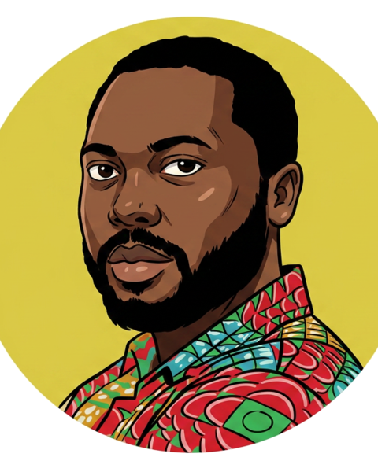

John Awotwi
Systems engineer · Accra, Ghana · 5°36′N 0°11′W
General notes
- Senior Technical Officer, CSIR-INSTI.
- Designs infrastructure that has to keep running on bad bandwidth and unreliable power.
- Deploys AI on hardware he can touch.
- Writes down what broke and how it got fixed.
- Currently available for consulting and projects.
Dimensions
- Years in the field
- 8+
- Platforms deployed
- 6+
- Entries written
- 40+
- Repositories
- 24

Detail views
Detail A
LSACROFT — Low-Cost Soil Analysis Device
IoT soil sensing platform for real-time NPK monitoring, crop recommendation, and fertilizer optimization for smallholder farmers.
ESP32 · Embedded C · IoT
[PLACEHOLDER: project link]
Detail B
HPC Cluster & Local AI Model Infrastructure
Multi-node compute cluster designed for scientific simulations, parallel workloads, and experimentation with locally-hosted AI models.
Proxmox · HPC · ML systems
[PLACEHOLDER: project link]
Detail C
AgHub Market Pricing Index
Market pricing tool and value chain content for Yam, Rice, and Sorghum — supporting data-driven decision making for farmers and stakeholders.
AgHub · Data systems
[PLACEHOLDER: project link]
Superseded: CSIRSpace repository · AgHub platform · CSIR eLearning
Parts list
| Item | Service | Description | Material |
|---|---|---|---|
| 01 | DevOps | CI/CD pipelines, containers and automated deployments. | Docker · GitHub Actions |
| 02 | Systems setup | Linux administration, compute environments, secure production. | Linux · Proxmox |
| 03 | IT as a service | Ongoing support, monitoring, backups and system management. | Monitoring · Backups |
| 04 | Web development | Sites, dashboards and internal tools, built for clarity. | PHP · Python |
Revision history
- REV 56 2026-10-03 From Welfare Contributions to Sustainability: A Simple Model for Predicting the Future of Sectorial Welfare Funds
- REV 55 2026-10-02 I Built Two Android Apps From My Phone Today — No Laptop, No Coding Desk
- REV 54 2026-09-08 My Fire Tablet Wouldn't Stop Restarting — So Hermes Fixed It Over USB
- REV 53 2026-09-01 GH-Link vs Visa/Mastercard: What Happened to Ghana's Homegrown Payment Card?
- REV 52 2026-08-23 Building My First Omarchy Plugin